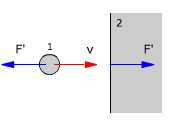

Choque frontal con pared o suelo En este choque la velocidad del cuerpo que choca y la fuerza de contacto con la pared tienen la misma dirección. La velocidad de la pelota tras el choque debe invertirse evidentemente. La velocidad de la pared antes y después del choque es cero  Método Se toma uno de los ejes en la dirección del movimiento Aunque el momento lineal se conserva, no se consigue nada aplicando la ecuación correspondiente porque el momento lineal de la pared es indeterminado Afortunadamente tenemos la condición de choque frontal (v'1 - v'2) = - k (v1 - v2) Teniendo en cuenta que v2 = v'2 = 0 resulta: v'1 = -k v1
Signos No se pone signo a las componentes pues estas lo llevan incluido. Cuando sean incógnitas, al despejarlas se obtendrá el valor con su signo y cuando sean datos habrá que sustituir la variable por el valor con su signo |